-
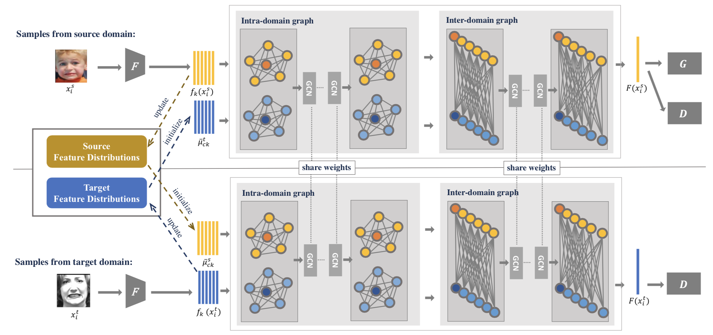
Cross-Domain Facial Expression Recognition: A Unified Evaluation Benchmark and Adversarial Graph Learning.
Tianshui Chen, Tao Pu, Yuan Xie, Hefeng Wu, Lingbo Liu, and Liang Lin.
Tech report, arXiv, Sep. 2020
Preprints
-
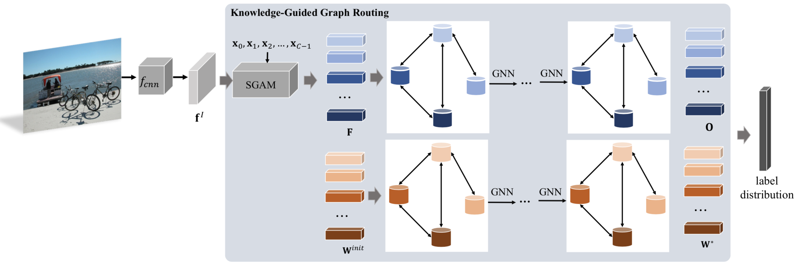
Knowledge-Guided Multi-Label Few-Shot Learning for General Image Recognition.
Tianshui Chen, Liang Lin, Riquan Chen, Xiaolu Hui, Hefeng Wu.
IEEE Transactions on Pattern Analysis and Machine Intelligence (T-PAMI), 2020.
[PDF]
-
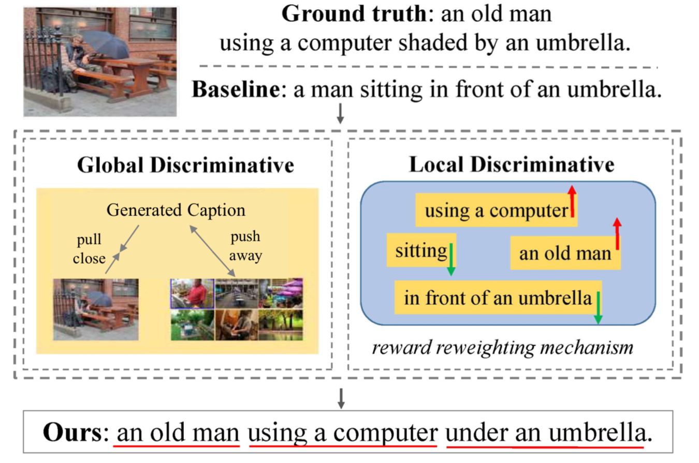
Fine-Grained Image Captioning with Global-Local Discriminative Objective.
Jie Wu, Tianshui Chen*, Hefeng Wu, Zhi Yang, Guangchun Luo, and Liang Lin.
IEEE Transactions on Mutimedia (T-MM), 2020.
-
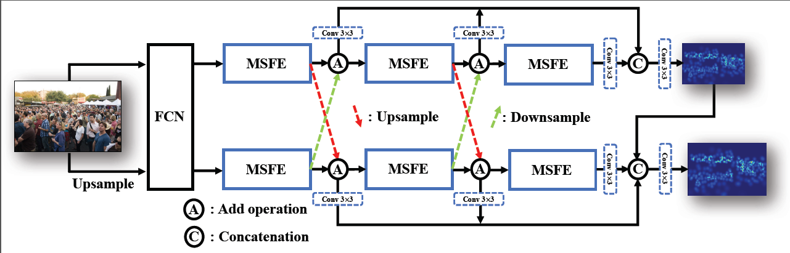
Crowd Counting via Scale-Communicative Aggregation Networks.
Lixian Yuan, Zhilin Qiu, Lingbo Liu, Hefeng Wu, Tianshui Chen, Pei Chen, and Liang Lin.
Neurocomputing, 2020.
[PDF]
-
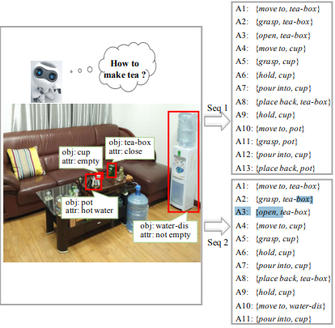
Neural Task Planning with And-Or Graph Representations.
Tianshui Chen, Riquan Chen, Lin Nie, Xiaonan Luo, Xiaobai Liu, and Liang Lin.
IEEE Transactions on Mutimedia (T-MM), 21(4), 1022-1034, 2019.
[PDF]
-

Learning to Segment Object Candidates via Recursive Neural Networks.
Tianshui Chen, Liang Lin, Xian Wu, Nong Xiao, and Xiaonan Luo.
IEEE Transactions on Image Processing (T-IP), 27(12), 5827-5839, 2018.
[PDF] [ProjectPage]
-

Content-Adaptive Sketch Portrait Generation by Decompositional Representation Learning.
Dongyu Zhang, Liang Lin, Tianshui Chen, Xian Wu, Wenwei Tan, and Ebroul Izquierdo.
IEEE Transactions on Image Processing (T-IP), 26(1): 328-339, 2017.
[PDF] [ProjectPage]
-

DISC: Deep Image Saliency Computing via Progressive Representation Learning.
Tianshui Chen, Liang Lin, Lingbo Liu, Xiaonan Luo, and Xuelong Li.
IEEE Transactions on Neural Networks and Learning Systems (T-NNLS), 27(6): 1135-1149, 2016.
[PDF] [Code] [ProjectPage]
Journal papers
-
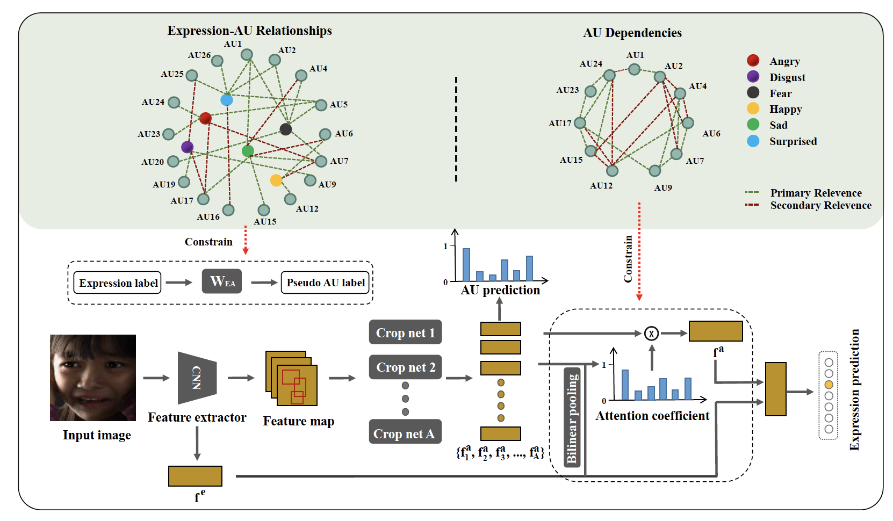
AU-Expression Knowledge Constrained Representation Learning for Facial Expression Recognition.
Tao Pu, Tianshui Chen*, Yuan Xie, Hefeng Wu, Liang Lin.
Proc. of IEEE International Conference on Robotics and Automation (ICRA), 2021.
-
Adversarial Graph Representation Adaptation for Cross-Domain Facial Expression Recognition.
Yuan Xie, Tianshui Chen*, Tao Pu, Hefeng Wu, Liang Lin.
Proc. of ACM International Conference on Multimedia (ACM MM), 2020. (Oral Presentation)
-
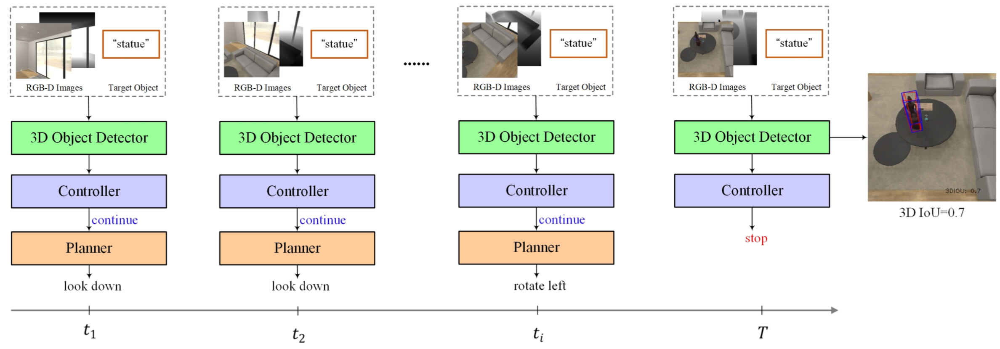
Active Object Search.
Jie Wu, Tianshui Chen*, Lishan Huang, Hefeng Wu, Guanbin Li, Ling Tian, Liang Lin.
Proc. of ACM International Conference on Multimedia (ACM MM), 2020. (Oral Presentation).
-
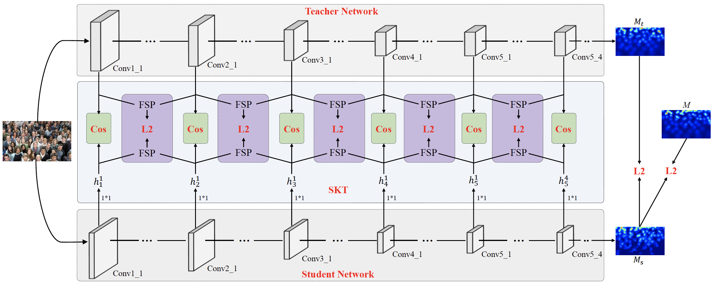
Efficient Crowd Counting via Structured Knowledge Transfer.
Lingbo Liu, Jiaqi Chen, Hefeng Wu, Tianshui Chen, Guanbin Li, Liang Lin.
Proc. of ACM International Conference on Multimedia (ACM MM), 2020.
-
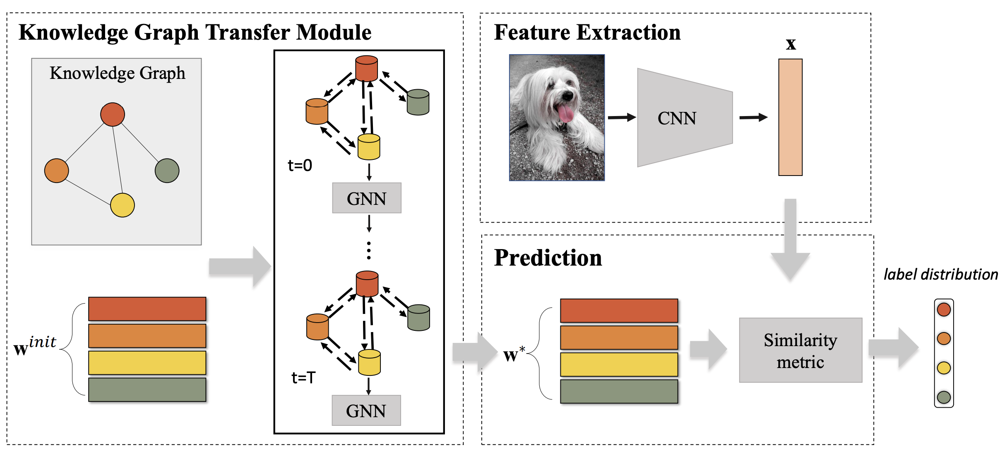
Knowledge Graph Transfer Network for Few-Shot Recognition.
Tianshui Chen†, Riquan Chen†, Xiaolu Hui, Hefen Wu, Guanbin Li, and Liang Lin.
Proc. of AAAI Conference on Artificial Intelligence (AAAI), 2020. (†co-first authors).
-
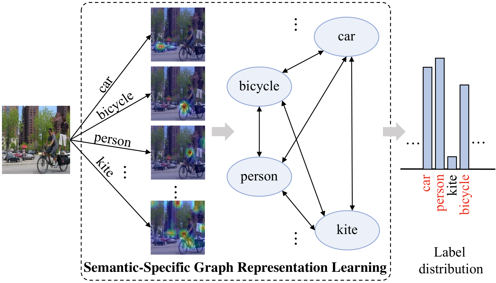
Learning Semantic- Specific Graph Representation for Multi-Label Image Recognition.
Tianshui Chen, Muxin Xu, Xiaolu Hui, Hefeng Wu, Liang Lin.
Proc. of IEEE International Conference on Computer Vision (ICCV), 2019.
-
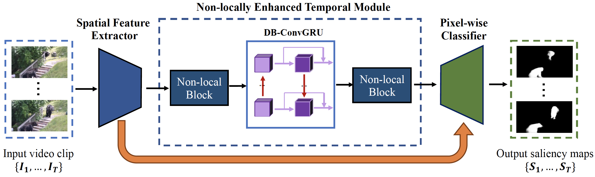
Semi-Supervised Video Salient Object Detection Using Pseudo-Labels.
Pengxiang Yan, Guanbin Li, Yuan Xie, Zhen Li, Chuan Wang, Tianshui Chen, Liang Lin.
Proc. of IEEE International Conference on Computer Vision (ICCV), 2019.
[PDF]
-
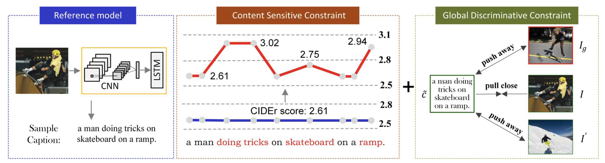
Concrete Image Captioning by Integrating Content Sensitive and Global Discriminative Objective.
Jie Wu, Tianshui Chen, Hefeng Wu, Qing Wang, Zhi Yang, Liang Lin.
Proc. of IEEE International Conference on Multimedia and Expo (ICME), 2019.
-
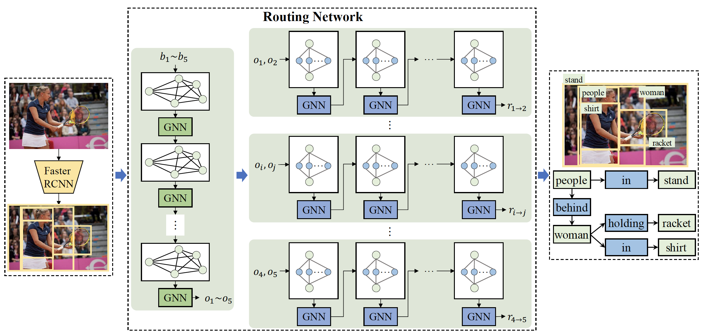
Knowledge-Embedded Routing Network for Scene Graph Generation.
Tianshui Chen, Weihao Yu, Riquan Chen, Liang Lin.
Proc. of IEEE Conference on Computer Vision and Pattern Recognition (CVPR), 2019.
-
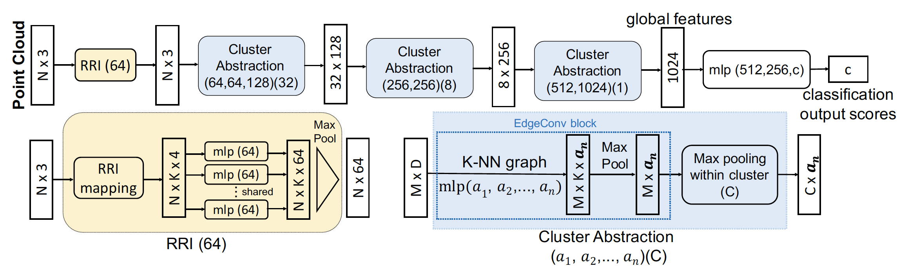
ClusterNet: Deep Hierarchical Cluster Network with Rigorously Rotation-Invariant Representation for Point Cloud Analysis.
Chao Chen, Guanbin Li, Ruijia Xu, Tianshui Chen, Meng Wang, Liang Lin.
Proc. of IEEE Conference on Computer Vision and Pattern Recognition (CVPR), 2019.
[PDF]
-

Fine-Grained Representation Learning and Recognition by Exploiting Hierarchical Semantic Embedding.
Tianshui Chen, Wenxi Wu, Yuefang Gao, Le Dong, Xiaonan Luo, Liang Lin.
Proc. of ACM International Conference on Multimedia (ACM MM), 2018. (Oral Presentation).
[PDF] [Code] [ProjectPage]
-

Knowledge-Embedded Representation Learning for Fine-Grained Image Recognition.
Tianshui Chen, Liang Lin, Riquan Chen, Yang Wu, Xiaonan Luo.
Proc. of International Joint Conference on Artificial Intelligence (IJCAI), 2018. (Oral Presentation)
[PDF]
-

Deep Reasoning with Knowledge Graph for Social Relationship Understanding.
Tianshui Chen†, Zhouxia Wang†, Jimmy Ren, Weihao Yu, Hui Cheng, Liang Lin.
Proc. of International Joint Conference on Artificial Intelligence (IJCAI), 2018. (†co-first authors, Oral Presentation).
-

Learning a Wavelet-like Auto-Encoder to Accelerate Deep Neural Networks.
Tianshui Chen, Liang Lin, Wangmeng Zuo, Xiaonan Luo, and Lei Zhang.
Proc. of AAAI Conference on Artificial Intelligence (AAAI), 2018. (Oral Presentation).
[PDF] [Code] [ProjectPage]
-

Recurrent Attentional Reinforcement Learning for Multi-label Image Recognition.
Tianshui Chen, Zhouxia Wang, Guanbin Li, and Liang Lin.
Proc. of AAAI Conference on Artificial Intelligence (AAAI), 2018.
[PDF]
-

Multi-label Image Recognition by Recurrently Discovering Attentional Regions.
Tianshui Chen†, Zhouxia Wang†, Guanbin Li, Ruijia Xu, and Liang Lin.
Proc. of IEEE International Conference on Computer Vision (ICCV), 2017. (†co-first authors).
[PDF]
-

Knowledge-Guided Recurrent Neural Network Learning for Task-oriented Action Prediction.
Liang Lin, Tianshui Chen†, Lili Huang†, Yukang Gan, and Hui Cheng.
Proc. of IEEE International Conference on Multimedia and Expo (ICME), 2017. (The world’s first 10K Best Paper Diamond Award, More info: http://www.ieee-icme.org/sc/award.php, †co-second authors).
[PDF]
-

Character Proposal Network for Robust Text Extraction.
Shuye Zhang, Mude Lin, Tianshui Chen, Lianwen Jin, Liang Lin.
Proc. of IEEE International Conference on Acoustics, Speech and Signal Processing (ICASSP), 2016.
[PDF]
Conference papers